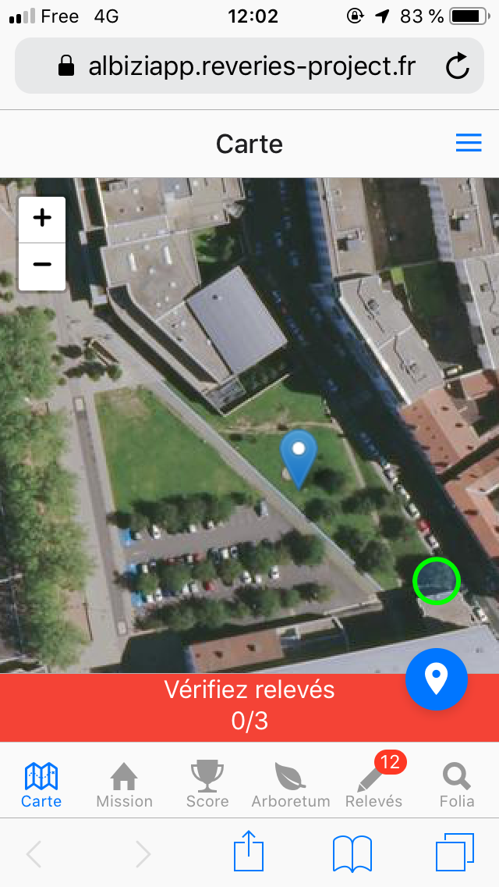
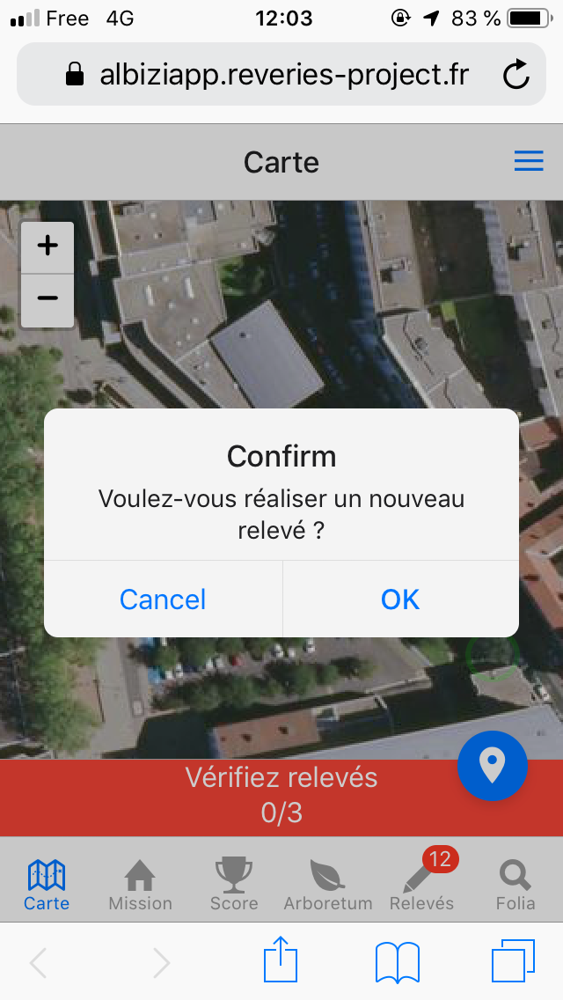

Faire un relevé :
La carte :
Une fois authentifié on peut accéder à la carte (1). Notre localisation est representée par une épingle bleue. Il suffit d’appuyer un peu sur l’ecran pour voir apparaitre le menu de création de relevé (2). On peut ensuite abandonner (“Cancel”) ou continuer la procédure (“OK”).

Figure 1: Carte de visualisation d’Albiziapp

Figure 2: Avertissement de réalisation de relevé